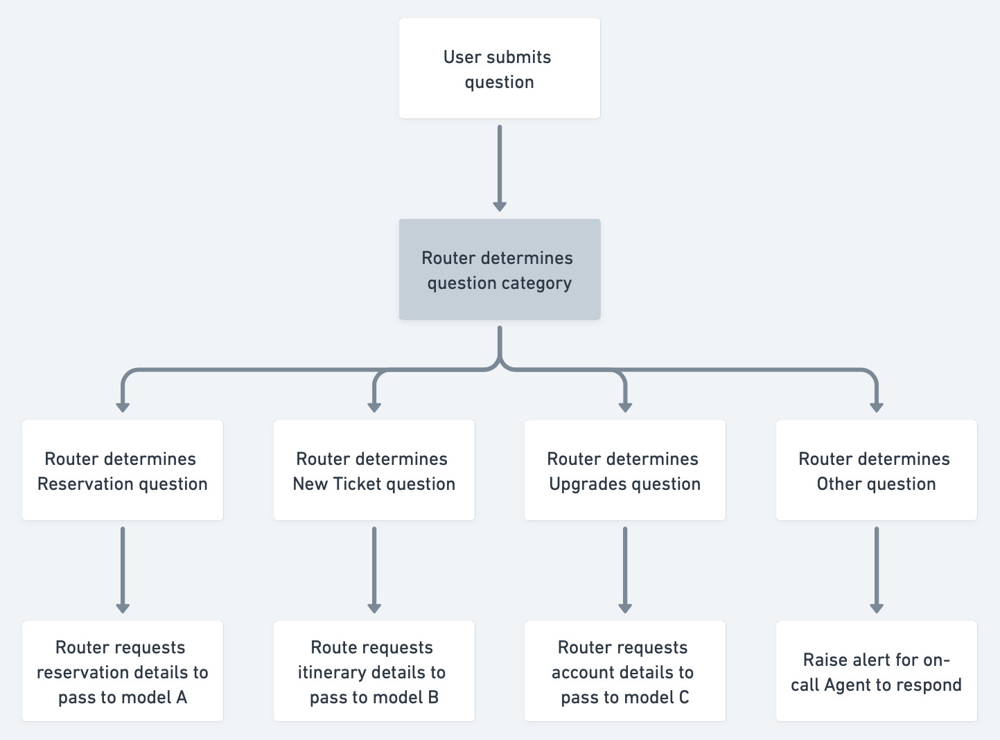

21. Prompting and pipeline strategies
2023-03-30
I frequently speak to people exploring and prototyping new products and features with LLMs. Given products like gpt-4 and claude are deeply non-deterministic black boxes, first-time builders need some time playing with them to get a “feel” for what kinds of outputs to expect from what kinds of inputs.
Once a user has a feel for how to work with these tools, they then start to tweak parameters and coax responses that narrow in on their use case without hallucinating or veering too far off from an expected output. For example, I’ve spent a lot of time tweaking prompts to generate great email drafts. (My interpretation of a great email is different from an unguided gpt’s.)
I frequently return to a set of strategies to help folks get good LLM results so I thought I’d document them here. These aren’t mutually exclusive for a given use case and I’d expect that the best approach would combine multiple strategies, likely through a framework like langchain. I expect this to be a living document, given how quickly we are learning what works and what doesn’t in prompting.
Prompting strategies
Zero-shot
This is the easiest prompting method most have already used: Simply stating a task or statement and requesting the mode’s completion. For this strategy, there’s a clear tradeoff between ease-of-use and performance.
Multi-shot
Multi-shot methods rely on one of LLMs’ best abilities: pattern-matching.
A multi-shot prompt consists of the following:
A multi-shot prompt might look like the following:
Tweet: Only thing I don’t agree with sis is the role of Big Daddy. John Goodman is still alive & well. He played the role in the original movie. It’s like they drew the character to look just like him. It’s too perfect for them not have him reprise that role.
Topic: movies
Tweet: Russ looking like Russ for first time since he left DC. Exhilarating. [#Clippers]
Topic: basketball
Tweet: A Classic Italian Trilogy - Vence, Florence & Rome Follow in the footsteps of the Grand Tour with our tailor-made holidays combining the three great cities of Venice, Florence and Rome. In partnership with our friends at Bagl
Topic: travel
Tweet:
Constructing multi-shot prompts require more consideration than zero-shot. Factors like the token window (to fit examples) and the quality of the examples (to not “overfit” the model) impact feasibility and performance.
Prompt context
LLMs typically respond well to additional context given on the task. For instance, one can expect considerable performance gains in explaining the requirements of the task or what tone of voice to use.
This might look like:
Instructions: You’re a high-performing professional accountant supporting clients in answering personal tax questions about the U.S. tax code. Your tone is informal but knowledgeable. When answering a question, clearly explain your logic.
The model can be sensitive to instructions or context. “Your tone is sarcastic” has the intended effect. For the most part, instructions like, “Complete all sentences” are adhered to, but may not be if there are many instructions or the prompt is long.
Data retrieval for in-context learning
Some use cases require a dynamic prompt context. A popular example is a “chat with a document” use case, in which a user asks an LLM questions about a document.
These prompts are dynamically constructed at the moment of user input and typically follow this pattern:
- The user submits a query
- The application searches for the most relevant information about the query
- The application passes the user’s query, the associated retrieved context, and perhaps some instructions to the LLM
- The LLM responds with a relevant completion
A lot happens in the second step and is what makes this strategy so powerful. One can imagine retrieving information from a database, a vector store, an API, or even another human.
The most common design pattern I have seen in applications is as follows: the user’s question is transformed into an embedding, that embedding is assessed against a database of existing embeddings, and the embedding with closest similarity to the question is retrieved.
The specifics are out of scope for this post, but of all strategies, this is the most sensitive to implementation details. For example, how information is “chunked” for creating embeddings has significant impact on performance.
The prompt ends up looking something like this:
Instructions: You’re an intelligent and affable investment analyst. You will answer a given user question about a company’s annual financial statement, and be given a few sentences of context on which to base your answer. If you do not see the answer to the question in the context, respond with “I’m not sure about that.”
Question: ${userQuestion}
Context: ${retrievedContext}
Of all strategies this requires the most groundwork (i.e., creating a vector database, generating embeddings). However, this approach is easily the most performant, and is essential for use cases that require reference against a “fact base” known prior to a user’s interaction.
Pipelines
Where prompting can be considered a “single interaction” with a model, there may be complex use cases that require more complex multi-stage handling of an input. This might mean a request kicks off a series of LLM tasks that may or may not interact with one another. I’ll call these pipelines for lack of a better word.
Self-reflection
We are learning that models are generally good at self-critique. [1] What I mean is that given a task, an output, and a directive to review the fit of the output against the task, an LLM like gpt-4 will make a reasonable assessment of its performance.
The impact of this strategy is probably apparent to many ChatGPT users. Speaking from personal experience, asking for a code snippet usually yields a first crack in a few seconds. However, perhaps the model didn’t follow my request for a TypeScript implementation, or failed to account for a dependency I expected. Asking, “Does this account for x?” usually quickly fixes the error.
This back-and-forth can be systematized. An application using a prompt can simply then feed the completion and a context string like:
Did this response achieve the previous instruction to ${instruction}? Respond with any changes to the original response, or keep the original response as is.
There are two big considerations for self-reflection pipelines.
First, any system that asks a model to self-reflect will more than double its token usage for the same number of tasks. This is likely not a problem in the long run — my prediction is the cost of intelligence will continue to quickly ramp down — but something to consider for more cost conscious projects.
Second, the latency of a single gpt-4 call can be multiple seconds. Multiplying that by at least two, to account for a model self-assessment, is likely not currently plausible for many more “real-time” use cases.
Model ensemble
In some use cases, the range of prompts, information sources, and tasks to execute is far too wide for a single prompt to capture. The ensemble helps solve this.
An ensemble is composed of multiple model “pathways”, each of which have been prompted or designed for handling a specific task or set of sub-tasks. Coordinating incoming tasks across each of these pathways is a “router” layer that categorizes the task at hand and which pathway is best equipped to handle it.
As an example, one can envision the following pipeline for an airline’s customer service chatbot:
- The user’s question is fed into a “routing” LLM prompt.
- The routing LLM determines that the question is about an existing reservation.
- The user’s question is then routed to a second LLM prompt regarding “reservations”.
- The reservations LLM pathway requires further information and clarification, surfacing a question to the user.
- And so on.
An example implementation might look like the below.

While these are powerful and flexible systems, these are likely heavier, production-grade pipelines that require considerable time and effort. While I haven’t yet seen one of these systems in place, I wouldn’t be surprised if there are examples like these in development or in early testing already.
[1] Can LLMs Critique and Iterate on Their Own Outputs? https://evjang.com/2023/03/26/self-reflection.html